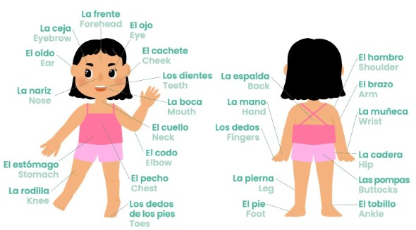

Days
Al día de lunes Monday
El martes Tuesday
El miercoles Wednesday
El jueves Thursday
El viernes Friday
El sabado Saturday
El domingo Sunday
Months
El eneor January
El febrero February
El marzo March
El abril April
El mayo May
El junio June
El julio July
El agosto August
El septiembre Septembre
El octubre October
El noviembre November
El diciembre Decembre
Body Parts

Fruits
Apples are called manzanas. Oranges are called naranjas. Bananas are called plátanos. Grapes are called uvas. Pineapples are called piñas. Pears are called peras. Cherries are called cerezas. Strawberries are called fresas. Blackberries are called moras. Blueberries are called arándanos. Raspberries are called frambuesas. Pears are called peras. Apricots are called albaricoques. Avocado is called palta. Watermelon — la sandía.